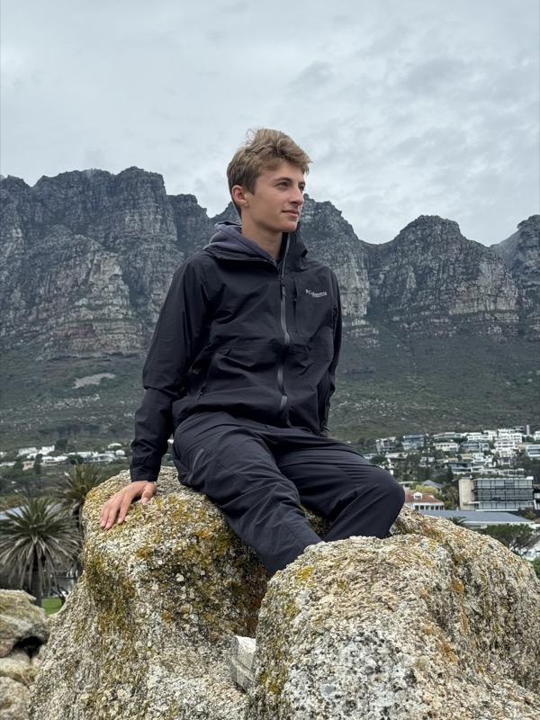

Mathnasium
I teach at Mathnasium, tutoring elementary and middle schoolers in one-hour math sessions a few times a week and working with a team of instructors to keep teaching strategy consistent.
3D Printing and Modeling
I'm highly proficient in Onshape for CAD modeling and in slicing with Bambu Studio. I also lead Sequoia's 3D Printing and Modeling club, which I founded in 2019 — drafting its charter, securing faculty support, and running meetings, agendas, and funding applications.
Cross Country & Track
I captain Sequoia's Cross Country and Track teams and lead the team's social media. I've built programs to strengthen culture, teamwork, and attendance, run the team's marketing, and earned All-League honors, course records, and three years of MVP honors from freshman through junior year.
Development Tools
I build and ship my own projects — including this site, RecovHR, and RunScore — using Claude Code, which I've been coding with for a while now, alongside Git/GitHub for version control and Vercel for deployment.
RecovHR
RecovHR is a heart-rate-reserve algorithm I built for individualized interval recovery, converting max heart rate, resting heart rate, lactate threshold, and workout type into the one number that tells you when you're recovered enough to go hard again. I wrote up the method in a paper and built a live threshold calculator.
RunScore
RunScore is a composite index I built that scores all 3,143 U.S. counties on the strength of their running culture, using CDC health data, race participation records, walkability scores, and fitness facility density. It correlates with home values, health outcomes, and school quality — a 10-point RunScore increase tracks with about $58,000 in higher median home value. I wrote up the methodology in a paper.
Other Projects
- GaussianSplatPipeline: a macOS drag-and-drop app that turns video into a 3D Gaussian Splat scene, chaining FFmpeg, COLMAP, and Brush into one pipeline.
- vocalSeparator: a macOS app that splits any audio file into separate vocal and instrumental tracks using Meta's Demucs model.
- FlockIn: an iOS app for high school ASB volunteer events — sign up, location-based check-in, and volunteer hour tracking.
- RunPath: an iOS app that turns GPX routes from a COROS watch into cinematic 3D videos with a keyframe timeline editor.
- AdobeMaybeLight: an open-source, non-destructive RAW photo editor built from scratch in Rust with a GPU shader pipeline and local ONNX-based AI, aiming to match Lightroom's editing power without the subscription.
- MinecraftControl: an AI agent that plays Minecraft by watching the screen and driving the keyboard and mouse itself.
- polymarket-arbitrage: a tool that detects cross-platform arbitrage opportunities between the Polymarket and Kalshi prediction markets.
- TakeComparer: a macOS app for recording and comparing A/B takes side-by-side on a scrollable timeline.
Music
I play saxophone, jazz and classical, with the San Carlos Jazz Band and the Sequoia Jazz Band, and I've released music on Apple Music and Spotify.
lukepopler@gmail.com

Luke Popler
IB Diploma Candidate, ASB Director of Technology, Cross Country/Track captain, and 3D printing club founder at Sequoia High School.
Skills
3D printing & modeling (Onshape, Bambu Studio), Claude Code, Git & GitHub, Vercel, drone operation, photography, video editing (Premiere Pro, Final Cut Pro), Lightroom, Photoshop, saxophone.
Other Projects
- GaussianSplatPipeline: a macOS drag-and-drop app that turns video into a 3D Gaussian Splat scene, chaining FFmpeg, COLMAP, and Brush into one pipeline.
- vocalSeparator: a macOS app that splits any audio file into separate vocal and instrumental tracks using Meta's Demucs model.
- FlockIn: an iOS app for high school ASB volunteer events — sign up, location-based check-in, and volunteer hour tracking.
- RunPath: an iOS app that turns GPX routes from a COROS watch into cinematic 3D videos with a keyframe timeline editor.
- AdobeMaybeLight: an open-source, non-destructive RAW photo editor built from scratch in Rust with a GPU shader pipeline and local ONNX-based AI, aiming to match Lightroom's editing power without the subscription.
- MinecraftControl: an AI agent that plays Minecraft by watching the screen and driving the keyboard and mouse itself.
- polymarket-arbitrage: a tool that detects cross-platform arbitrage opportunities between the Polymarket and Kalshi prediction markets.
- TakeComparer: a macOS app for recording and comparing A/B takes side-by-side on a scrollable timeline.